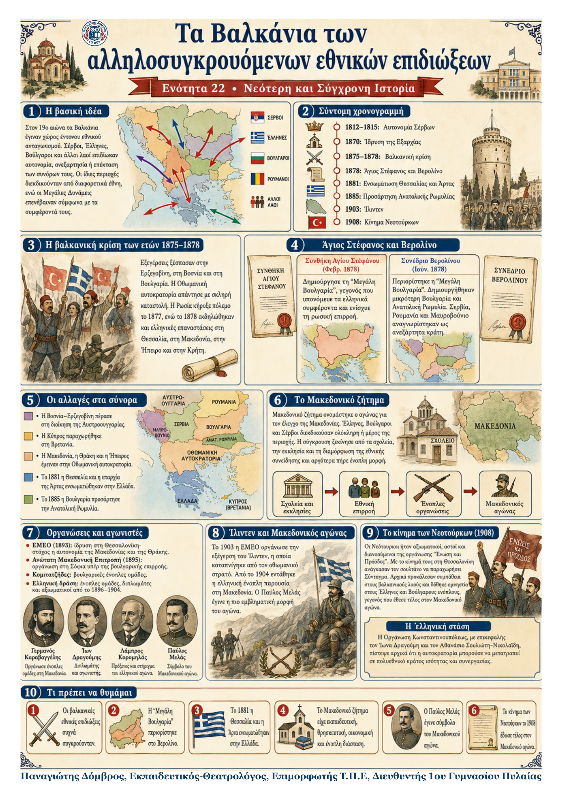

Δεν βρέθηκε η λέξη ή η φράση μέσα στην ενότητα.
1Η βασική ιδέα
Στον 19ο αιώνα τα Βαλκάνια μετατράπηκαν σε χώρο ανταγωνισμού ανάμεσα σε νέες εθνικές ιδέες. Σέρβοι, Έλληνες, Βούλγαροι και άλλοι λαοί επιδίωκαν αυτονομία, ανεξαρτησία ή επέκταση των συνόρων τους. Επειδή όμως οι πληθυσμοί ήταν συχνά αναμεμειγμένοι, οι εθνικές διεκδικήσεις συγκρούονταν. Παράλληλα, οι Μεγάλες Δυνάμεις επενέβαιναν, επειδή επιδίωκαν πολιτική και στρατηγική επιρροή στην περιοχή.
2Η άνοδος των βαλκανικών εθνικών επιδιώξεων
Οι Σέρβοι απέκτησαν αυτονομία στα έτη 1812–1815.
Οι Έλληνες ίδρυσαν πρώτοι ανεξάρτητο εθνικό κράτος στα Βαλκάνια.
Οι βουλγαρικές επιδιώξεις εκφράστηκαν με την ίδρυση της Εξαρχίας το 1870.
Οι διεκδικήσεις αφορούσαν συχνά τις ίδιες περιοχές της Οθωμανικής αυτοκρατορίας.
Οι Μεγάλες Δυνάμεις στήριζαν ή περιόριζαν τις αλλαγές ανάλογα με τα συμφέροντά τους.
3Η βαλκανική κρίση των ετών 1875–1878
Εξεγέρσεις και καταστολή. Οι εθνικές ιδέες προκάλεσαν επαναστάσεις στην Ερζεγοβίνη, στη Βοσνία και στη Βουλγαρία κατά τα έτη 1875–1876. Η Οθωμανική αυτοκρατορία απάντησε με μαζικές σφαγές. Η σκληρή καταστολή προκάλεσε αντιδράσεις στην Ευρώπη.
Ρωσοτουρκικός πόλεμος. Η Ρωσία κήρυξε πόλεμο στην Οθωμανική αυτοκρατορία το 1877 και επικράτησε. Παράλληλα, το 1878 ξέσπασαν επαναστάσεις ελληνικών πληθυσμών στη Θεσσαλία, στη Μακεδονία, στην Ήπειρο και στην Κρήτη.
4Συνθήκη Αγίου Στεφάνου και Συνέδριο Βερολίνου
| Θέμα | Άγιος Στέφανος, Φεβρ. 1878 | Βερολίνο, Ιούν. 1878 |
|---|---|---|
| Βουλγαρία | Δημιουργία μεγάλης αυτόνομης Βουλγαρίας. | Περιορισμός σε μικρότερη Βουλγαρία και Ανατολική Ρωμυλία. |
| Ελληνικά συμφέροντα | Υπονομεύονταν από τη «Μεγάλη Βουλγαρία». | Η Μακεδονία, η Θράκη και η Ήπειρος έμειναν στους Οθωμανούς. |
| Μεγάλες Δυνάμεις | Ενισχυόταν κυρίως η ρωσική επιρροή. | Βρετανία και Γερμανία περιόρισαν τη ρωσική επιρροή. |
5Οι αποφάσεις του Βερολίνου και οι αλλαγές στα σύνορα
| Περιοχή / κράτος | Απόφαση |
|---|---|
| Σερβία, Ρουμανία, Μαυροβούνιο | Κηρύχθηκαν ανεξάρτητα κράτη. |
| Βουλγαρία | Έγινε μικρότερη αυτόνομη ηγεμονία υπό την επικυριαρχία του σουλτάνου. |
| Ανατολική Ρωμυλία | Έγινε αυτόνομη περιοχή, επίσης υπό την επικυριαρχία του σουλτάνου. |
| Βοσνία–Ερζεγοβίνη | Η διοίκησή της ανατέθηκε στην Αυστροουγγαρία. |
| Κύπρος | Παραχωρήθηκε στη Βρετανία. |
| Μακεδονία, Θράκη, Ήπειρος | Παρέμειναν στην Οθωμανική αυτοκρατορία. |
6Ελληνικές και βαλκανικές εξελίξεις μετά το 1878
Ενσωμάτωση Θεσσαλίας και Άρτας. Μετά από ελληνοτουρκικές διαπραγματεύσεις, η Θεσσαλία, εκτός από την περιοχή της Ελασσόνας, και η επαρχία της Άρτας ενσωματώθηκαν στο ελληνικό κράτος το 1881.
Προσάρτηση της Ανατολικής Ρωμυλίας. Το 1885 η Βουλγαρία προσάρτησε την Ανατολική Ρωμυλία, παραβιάζοντας τις αποφάσεις του Βερολίνου. Η περιοχή είχε σημαντική ελληνική παρουσία. Η Σερβία αντέδρασε με πόλεμο. Στην Ελλάδα η κοινή γνώμη ζητούσε ένοπλη επέμβαση, όμως η κυβέρνηση έμεινε ουδέτερη ύστερα από πίεση των Δυνάμεων.
7Το Μακεδονικό ζήτημα
Ορισμός. Μακεδονικό ζήτημα ονομάστηκε ο αγώνας για τον έλεγχο της Μακεδονίας, η οποία παρέμενε τμήμα της Οθωμανικής αυτοκρατορίας. Έλληνες, Βούλγαροι και Σέρβοι διεκδικούσαν ολόκληρη ή μέρος της περιοχής.
Πρώτη φάση: εκπαίδευση και θρησκεία. Η σύγκρουση ξεκίνησε ως αγώνας για τα σχολεία, τη γλώσσα και τη θρησκευτική συνείδηση των κατοίκων. Η κάθε πλευρά προσπαθούσε να ενισχύσει το δικό της εθνικό φρόνημα.
Οικονομική διάσταση. Η ελληνική Οργάνωση Θεσσαλονίκης προσπάθησε να περιορίσει τις οικονομικές σχέσεις με Βούλγαρους επαγγελματίες και εμπόρους. Ο οικονομικός ανταγωνισμός χρησιμοποιήθηκε ως μέσο εθνικής επιρροής.
8Τι μας δείχνουν οι ιστορικές πηγές
• Εκπαιδευτική διάσταση: η έκθεση του ελληνικού προξενείου Θεσσαλονίκης (1892) ζητούσε καλύτερα καταρτισμένους Έλληνες δασκάλους για τη Μακεδονία.
• Οικονομική διάσταση: η Οργάνωση Θεσσαλονίκης χρησιμοποίησε και οικονομικό αποκλεισμό για να ενισχύσει τους ελληνικούς εθνικούς στόχους.
9Από την εθνική επιρροή στην ένοπλη σύγκρουση
Οργανώσεις, γεγονότα και ένοπλες ομάδες
ΕΜΕΟ (1893): ιδρύθηκε στη Θεσσαλονίκη από Βούλγαρους της Μακεδονίας. Διακήρυττε την αυτονομία της Μακεδονίας και της Θράκης, ανεξάρτητα από την εθνικότητα των κατοίκων.
Ανώτατη Μακεδονική Επιτροπή (1895): ιδρύθηκε στη Σόφια και επιδίωκε αυτόνομη Μακεδονία που αργότερα θα ενωνόταν με τη Βουλγαρία.
Κομιτατζήδες: βουλγαρικές ένοπλες ομάδες που οργανώθηκαν στη Μακεδονία γύρω στο 1898.
Ελληνικές ομάδες: οι πρώτες έφτασαν στη Μακεδονία στα έτη 1896–1897 και συγκρούστηκαν με κομιτατζήδες.
Εξέγερση του Ίλιντεν (Ιούλιος 1903): οργανώθηκε από την ΕΜΕΟ και καταπνίγηκε από τον οθωμανικό στρατό.
Από το 1904 έφτασαν Έλληνες αξιωματικοί, ενώ στις συγκρούσεις συμμετείχαν και οθωμανικά στρατεύματα.
10Σημαντικά πρόσωπα του Μακεδονικού αγώνα
• Γερμανός Καραβαγγέλης: μητροπολίτης Καστοριάς με έντονη δράση υπέρ των ελληνικών επιδιώξεων.
• Ίων Δραγούμης και Λάμπρος Κορομηλάς: διπλωμάτες που συνέβαλαν στην οργάνωση και στον συντονισμό της ελληνικής δράσης.
• Παύλος Μελάς: αξιωματικός και εμβληματική μορφή του αγώνα· σκοτώθηκε στη Μακεδονία.
11Το κίνημα των Νεοτούρκων (1908)
Ποιοι ήταν. Οι Νεότουρκοι ήταν Τούρκοι αξιωματικοί, αστοί και διανοούμενοι της οργάνωσης «Ένωση και Πρόοδος». Αντιδρούσαν στην παρακμή της Οθωμανικής αυτοκρατορίας και έδιναν έμφαση στην τουρκική εθνική ταυτότητα.
Το κίνημα. Το καλοκαίρι του 1908 ξέσπασε στη Θεσσαλονίκη το κίνημα των Νεοτούρκων. Οι Νεότουρκοι ανάγκασαν τον σουλτάνο να παραχωρήσει Σύνταγμα και ανακοίνωσαν φιλελεύθερες μεταρρυθμίσεις.
Άμεση συνέπεια. Δόθηκε αμνηστία στους Έλληνες και Βούλγαρους ενόπλους. Έτσι σταμάτησε ο Μακεδονικός αγώνας. Οι βαλκανικοί λαοί αντιμετώπισαν αρχικά το κίνημα με συμπάθεια. Η Οργάνωση Κωνσταντινουπόλεως, με επικεφαλής τον Ίωνα Δραγούμη και τον Αθανάσιο Σουλιώτη-Νικολαΐδη, πίστεψε αρχικά ότι η αυτοκρατορία μπορούσε να γίνει πολυεθνικό κράτος ισότητας και συνεργασίας.
12Τι πρέπει να θυμάμαι
Οι βαλκανικές εθνικές επιδιώξεις συχνά συγκρούονταν, επειδή αφορούσαν τις ίδιες περιοχές.
Η συνθήκη του Αγίου Στεφάνου δημιούργησε τη «Μεγάλη Βουλγαρία», αλλά το Βερολίνο την περιόρισε.
Το 1881 η Θεσσαλία και η επαρχία της Άρτας ενσωματώθηκαν στην Ελλάδα.
Το Μακεδονικό ζήτημα είχε εκπαιδευτική, θρησκευτική, οικονομική και ένοπλη διάσταση.
Η ελληνική και η βουλγαρική δράση οργανώθηκαν με σχολεία, οργανώσεις και ένοπλες ομάδες.
Το κίνημα των Νεοτούρκων το 1908 έφερε Σύνταγμα και έθεσε τέλος στον Μακεδονικό αγώνα.
